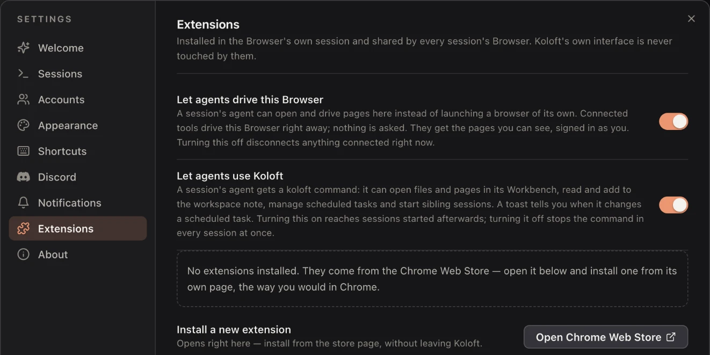

Agents can use Koloft too
An agent lives in its terminal. On its own it cannot put a file in front of you, leave a line for tomorrow's session, or use the browser you are signed into. Koloft gives it two things: a koloft command, and the web tabs in its own Workbench.
The koloft command
Every session Koloft starts on this Mac, Claude or Codex, gets a koloft
command. It is on by
default. The switch is Settings ▸ Extensions ▸ "Let agents use Koloft". Turning it on
reaches sessions you start after that. Turning it off stops the command in every session
at once. When an agent changes a scheduled job, a small message pops up to tell you.
With it, the agent can:
Workbench and note
koloft open— show you a file or a web page in its Workbenchkoloft diff— show you what changed in a file since the last commitkoloft note— read the folder's note, or add a line to the end of it
Scheduled jobs
koloft cron— list, show, add, change, remove, turn on or off, or run a job now; each job has its own timer, tool, model, effort and permission
Sessions
koloft session list— see this folder's sessions, and whether each is working, waiting for you, or idlekoloft session new— start a sibling session of the same kind (Claude starts Claude, Codex starts Codex), in its own git worktree if askedkoloft session send— Codex only: message another Codex session (a Claude session uses its own SendMessage tool)
Each command prints its answer, so the agent sees what happened. The agent runs
koloft help for the rest.

Your browser, for the agent
Browser tools for agents normally start a browser of their own. It is a second browser you cannot see, and it is signed into nothing. Koloft offers its web tabs instead. Every Claude session on this Mac starts with a secret CDP address (CDP is the Chrome DevTools Protocol, the way tools steer a browser). A browser tool that uses it steers that session's own web tabs. This works while Settings ▸ Extensions ▸ "Let agents drive this Browser" is on.
- playwright-mcp and the Playwright CLI (command-line interface), tools that steer a
browser: nothing to set up.
Both read
PLAYWRIGHT_MCP_CDP_ENDPOINT, which is already set for the session, so they open a tab in Koloft and not a browser of their own. - your own Playwright script: one line, with the address in
KOLOFT_BROWSER_CDP.
chromium.connectOverCDP(process.env.KOLOFT_BROWSER_CDP)
What to expect
| case | what happens |
|---|---|
| it connects | It just drives. Nothing is asked. The switch is the one control. |
| pages it opens | Background web tabs with an unread dot, like an agent's open. No pane opens by itself, and the tab it is driving is marked. |
| pages it can see | That session's tabs only. Each session has its own address, reachable only from this Mac, behind a path no one can guess. |
| turning it off | Settings ▸ Extensions ▸ "Let agents drive this Browser". Off cuts whatever is connected right now. A session you start after that goes back to its own browser. A session already running keeps the old address, and its tool fails until you restart that session. |
| the trade | The agent drives the browser you are signed into. That is the point, and it is what the switch is for. |
If you run tools another way
- an explicit
--cdp-endpointwins, so you can point one tool at another browser without the switch --isolateddoes not get a tool out: the address Koloft set still wins, and the switch is the way out
Not there yet
the browser in Codex(a Codex session has the koloft command, but not the web tabs)either one in remote folders(a session on another machine has neither, yet)
next page -> Sessions on a timer